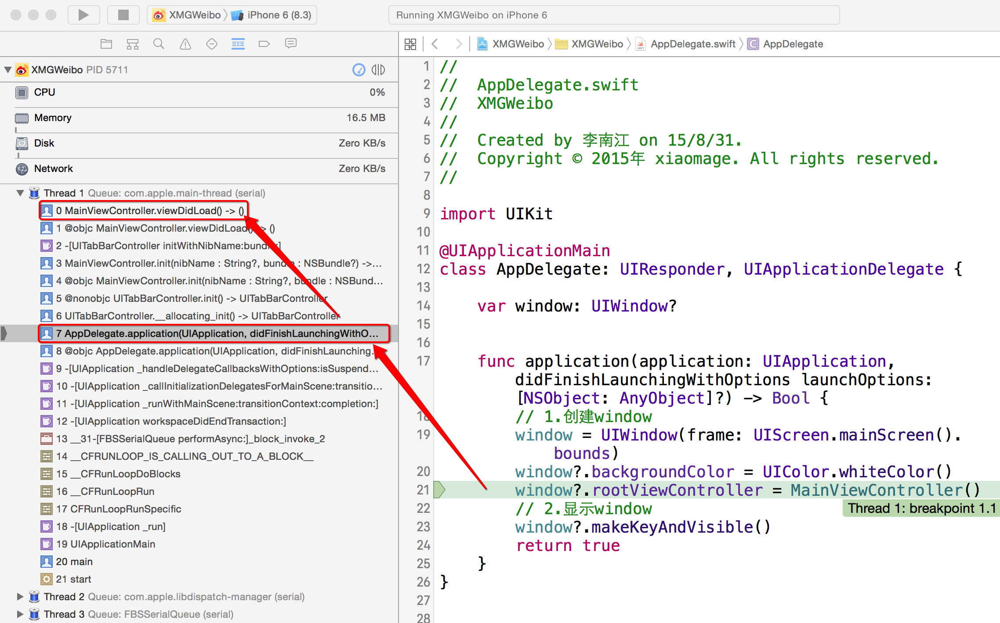
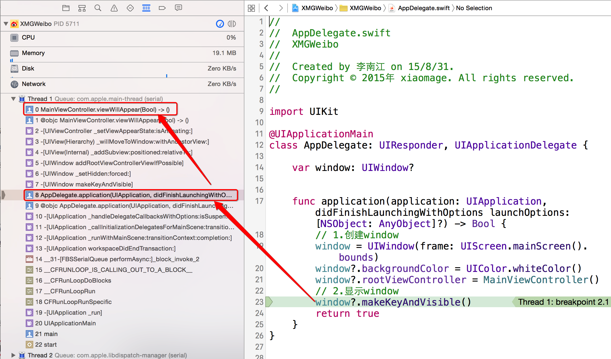

撰写 按钮 /**
添加所有子控制
*/
private func addChildViewControllers()
{
addChildViewController(HomeTableViewController(), title: "首页", imageName: "tabbar_home")
addChildViewController(MessageTableViewController(), title: "消息", imageName: "tabbar_message_center")
// 添加一个占位的控制器
addChildViewController(UIViewController())
addChildViewController(DiscoverTableViewController(), title: "发现", imageName: "tabbar_discover")
addChildViewController(ProfileTableViewController(), title: "我", imageName: "tabbar_profile")
}
/// 撰写按钮
lazy private var composeButton:UIButton = {
// 1.创建按钮
let button = UIButton()
// 2.设置图片
button.setImage(UIImage(named: "tabbar_compose_icon_add"), forState: UIControlState.Normal)
button.setImage(UIImage(named: "tabbar_compose_icon_add_highlighted"), forState: UIControlState.Highlighted)
// 3.设置背景图片
button.setBackgroundImage(UIImage(named: "tabbar_compose_button"), forState: UIControlState.Normal)
button.setBackgroundImage(UIImage(named: "tabbar_compose_button_highlighted"), forState: UIControlState.Highlighted)
// 5.添加到tabBar上
// Swift中能不写self就不写self, 在闭包中必须写self
self.tabBar.addSubview(button)
// 6.返回按钮
return button
}()
self.MainViewController 中添加以下代码，并且增加断点override func viewDidLoad() {
super.viewDidLoad()
addChildViewControllers()
// The tab bar view associated with this controller. (read-only)
print(tabBar)
print(tabBar.items)
}
override func viewWillAppear(animated: Bool) {
super.viewWillAppear(animated)
print(__FUNCTION__)
print(tabBar.items)
}
运行测试，通过调用堆栈观察可以发现
viewDidLoad 方法调用是实例化控制器方法触发的

此时只是创建子控制器，而由于界面还没有显示，按照 iOS 开发的延迟创建原则，tabBar 中的 items 还没有被创建
viewWillAppear 方法是由 makeKeyAndVisible 方法触发的

此时需要开始准备将控制器的子视图添加到界面上，因此 tabBar 中的 items 已经被创建
因此可以考虑在 viewWillAppear 方法中 计算加号按钮位置
撰写按钮 的位置 /**
设置加号按钮位置
*/
private func setupComposeButton()
{
// 1.计算按钮宽度
let width = tabBar.bounds.width / CGFloat(viewControllers!.count)
// 2.创建按钮frame
let rect = CGRect(x: 0, y: 0, width: width, height: tabBar.bounds.height)
// 3.设置按钮frame和偏移位
composeButton.frame = CGRectOffset(rect, 2 * width, 0)
}
lazy private var composeButton:UIButton = {
// 1.创建按钮
let button = UIButton()
// 2.设置图片
button.setImage(UIImage(named: "tabbar_compose_icon_add"), forState: UIControlState.Normal)
button.setImage(UIImage(named: "tabbar_compose_icon_add_highlighted"), forState: UIControlState.Highlighted)
// 3.设置背景图片
button.setBackgroundImage(UIImage(named: "tabbar_compose_button"), forState: UIControlState.Normal)
button.setBackgroundImage(UIImage(named: "tabbar_compose_button_highlighted"), forState: UIControlState.Highlighted)
// 4.添加监听
button.addTarget(self, action: "composetBtnClick", forControlEvents: UIControlEvents.TouchUpInside)
// 5.添加到tabBar上
// Swift中能不写self就不写self, 在闭包中必须写self
self.tabBar.addSubview(button)
// 6.返回按钮
return button
}()
// 运行循环监听到事件后，向 VC 发送消息，动态执行 方法，因此不能设置为 private
func composetBtnClick()
{
print(__FUNCTION__)
}
注意：
composetBtnClick函数不能使用private修饰，因为当系统监听到按钮点击事件时，会给控制器发送composetBtnClick消息，如果设置成私有函数